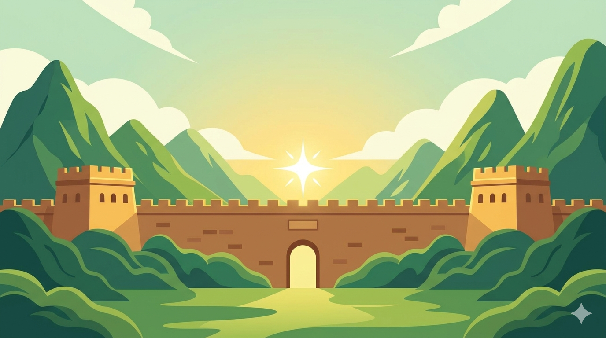

08 剧情阅读复用旧版图片、对白与选项结构
‹海丝瓷绣 · 剧情··· ◉
海丝瓷绣 · 一念归期
第一幕 · 海丝地图
旁白
展柜中，金色航线在深蓝的海丝地图上蜿蜒。一段跨越山海的故事，正等待你开启。
是否前往查看海丝地图？
前往地图
继续闲逛
沿用旧版图片、对白与选项的呈现方式。章节跟随路线解锁，不制作 3D 场景。当前插画仅为占位。
首页左右按钮缩小，中央圆形按钮已移除。右侧“路线”用于选择路线；底部只显示当前路线进度，默认收起，点击展开当前任务。未选路线时不显示底部条。
其他页面延续上一版。仅为设计稿；底部可点击展开和收起，其他入口只跳转到对应草图。

澳门博物馆| 内容 | 类型 | 状态 |
|---|---|---|
| 原来瓷与绣可以这样相遇 | 新发布 | 待审核 |
| 我的蓝白瓷砖作品 | 修改 v2 | 待审核 |
| 在湖南遇见一针一线 | 新发布 | 待审核 |
文字与图片一并检查。修改版本通过后替换公开内容；驳回时保留原已审核版本。